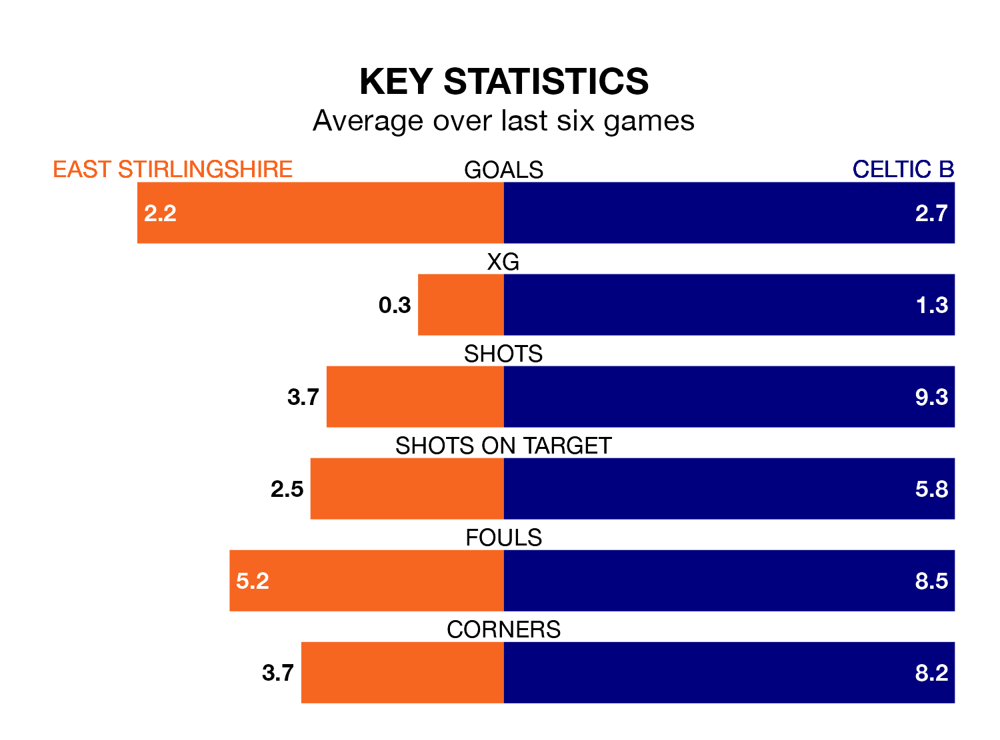

Celtic B come to the Falkirk Community Stadium to play East Stirlingshire on Saturday in excellent form, having collected 16 points from their last six games.
The visitors have won five and drawn one of their last six fixtures, while the Shire have four wins and two losses.
With 74 goals in 31 games so far this season, Celtic B are the league's third-highest scorers with 2.4 goals per game. And they are conceding fewer than average, letting in 38 goals at a rate of 1.2 per game.
East Stirlingshire, meanwhile, are below average scorers, with 1.6 goals per game, compared to a league average of 1.7. They have conceded 1.9 goals per game.
The Shire are 14th in the table after 32 games, of which they have won 10 and drawn five, earning 35 points.
The visitors are nine places ahead of the home team in fifth, with 17 wins and five draws putting them on 56 points.
In the last five years, East Stirlingshire and Celtic B have played each other on five occasions. East Stirlingshire won two of them and Celtic B three.
On average, the Shire scored 0.8 goals and Celtic B 1.4 in those matches.
Their last meeting was on October 6, when East Stirlingshire won 2-1 away.
East Stirlingshire's last match was on April 5, a 5-3 loss against Hearts U21.
Celtic B beat Stirling University 2-0 last time out, on Sunday.
Updated: 14:47 (UTC), 09/04/24